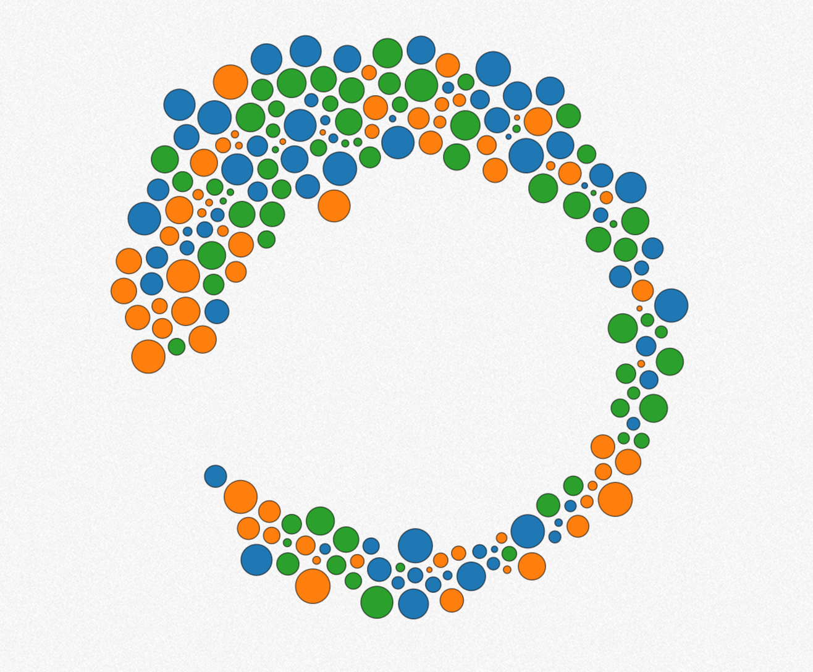
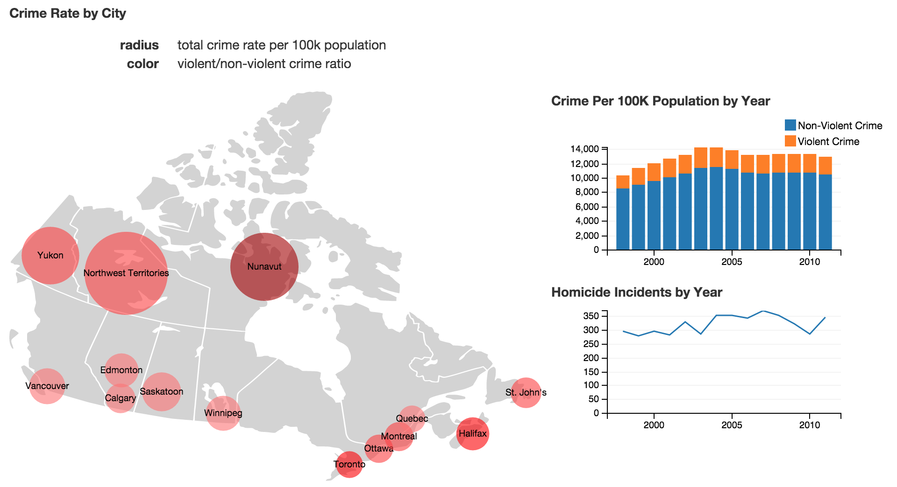
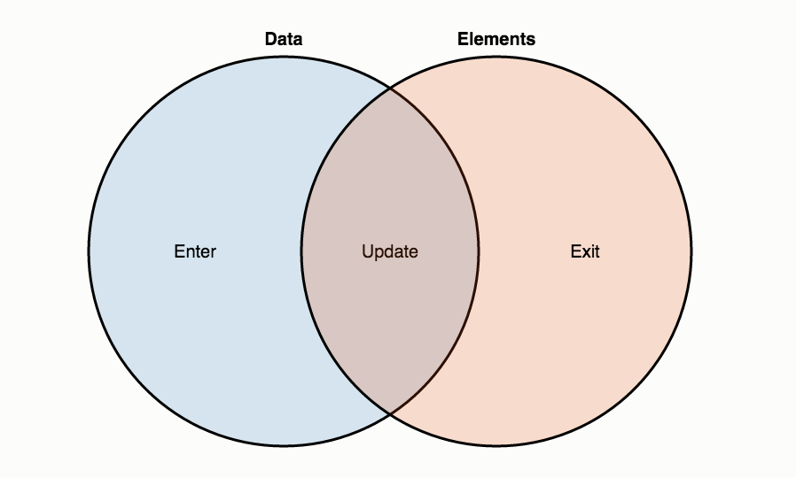

Big Data in the Browser?
Oliver Zeigermann / @DJCordhose
Online-Version: http://bit.ly/1DXcRtP
Oliver Zeigermann


- Developer, Architect, Consultant, and Coach
- Hamburg, Germany
- http://zeigermann.eu
- Working for embarc Software Consulting GmbH
- @DJCordhose
- Book: JavaScript für Java-Entwickler
Inspiration: Interactive big data @graylog


My Question for today: How did US air-traffic change after 9/11?
However: That question is really vague
Problem #1: Often you do not even know the question
What do you do when you have no clue?
Solution #1: You play around
D3.js: Dynamic graphics in the browser
Interactive graphics are the basis of playing around
A more complex example to play around (no big data, yet)
Major Canadian City Crime Stats 1998-2011
D3.js: Dynamic graphics in the browser
- http://d3js.org/
- Transform your data into visualizations in the browser
- Style of programming declarative
- Main field of use are diagrams using SVG (but D3 is not limited to that)
- Data is bound to SVG elements which change once the data changes
More D3.js Demos
D3 Example Code
var updateSelection = d3.select("body") // select the body tag
.selectAll("p") // select all p tags which are children
.data([4, 8, 15, 16, 23, 42]) // bind elements with data
.text(function (d) { // data gets passed in
return "I’m number " + d + "!"; // result gets displayed
})
.style("font-size", function (d) {
return 2 * d + "px";
});
<p>First p</p>
<p>Second p</p>
Data-Joins
Data is being linked to elements using Joins
Copyright 2012, Mike Bostock http://bost.ocks.org/mike/join/
Enter, Update, Exit
// add a paragraph for each data not bound to an element
updateSelection.enter()
.append("p")
.text(function (d) {return "I’m number " + d + "!";});
// update data and update elements
data[1] = 40;
var newSelection = updateSelection.data(data);
newSelection.text(function (d) {return "I’m number " + d + "!";});
// remove all elements that are not bound to data
var newSelection = updateSelection.data([1, 2]);
newSelection.exit().remove();
Problem #2: Data might be really big and multivariate
Solution #2: Use indexes and multidimensional filtering in the browser
Crossfilter: Filtering millions of data sets in real time
- http://square.github.io/crossfilter/
- Kann im Browser Millionen von Datensätzen in Echtzeit filtern
- Datensätze werden nach dem Laden indiziert
- Kann mit D3 kombiniert werden
- Von Crossfilter gefilterte Daten dienen dann als Daten für D3
Problem #3: Data might be multivariate and connections might be non-obvious
Solution #3: Use coordinated visualizations with multidimensional filtering
dc.js: Charting with D3 and Crossfilter
- http://dc-js.github.io/dc.js/
- D3 und Crossfilter sind beide für sich sehr mächtig und nützlich
- Die Integration beider ist allerdings mühsam
- dc.js übernimmt die Integration
- dc.js stellt eine ganze Reihe dynamischer Diagramm-Typen für euch zur Verfügung
Wrapup
- D3 helps you to interactively explore your data visually
- For large amounts of multivariate datasets
- Crossfilter allows for fast multidimensional filtering
- there are limitations to data size, number of data sets, and dimensions
- you might have to make a pre-selection
- Use DC for coordinated visualizations with powerful widgets
Resources
Thank you!
Questions / Discussion
Oliver Zeigermann / @DJCordhose
Crossfilter: Filtering millions of data sets in real time
- http://square.github.io/crossfilter/
- Kann im Browser Millionen von Datensätzen in Echtzeit filtern
- Datensätze werden nach dem Laden indiziert
- Kann mit D3 kombiniert werden
- Von Crossfilter gefilterte Daten dienen dann als Daten für D3
Crossfilter Demo
- Airline on-time performance (5.3MB in ca. 230.000 Datensätzen)
- Airline on-time performance (lokal) (5.3MB in ca. 230.000 Datensätzen)
Mögliche Fragen
Crossfilter Code Samples aus dem Beispiel
1
2
dc.js: Charting with D3 and Crossfilter
- http://dc-js.github.io/dc.js/
- D3 und Crossfilter sind beide für sich sehr mächtig und nützlich
- Die Integration beider ist allerdings mühsam
- dc.js übernimmt die Integration
- dc.js stellt eine ganze Reihe dynamischer Diagramm-Typen für euch zur Verfügung
dc.js Demo
dc.js Demo (lokal)
dc.js Code Samples aus den Beispielen
1
2